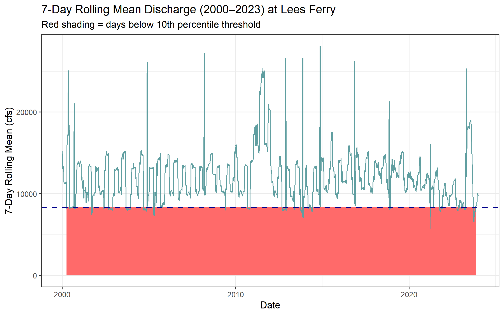
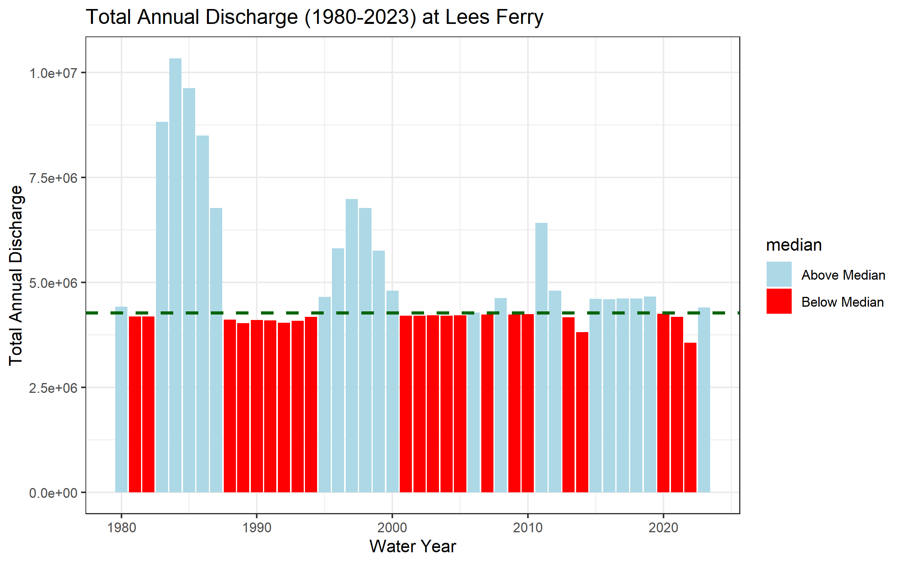
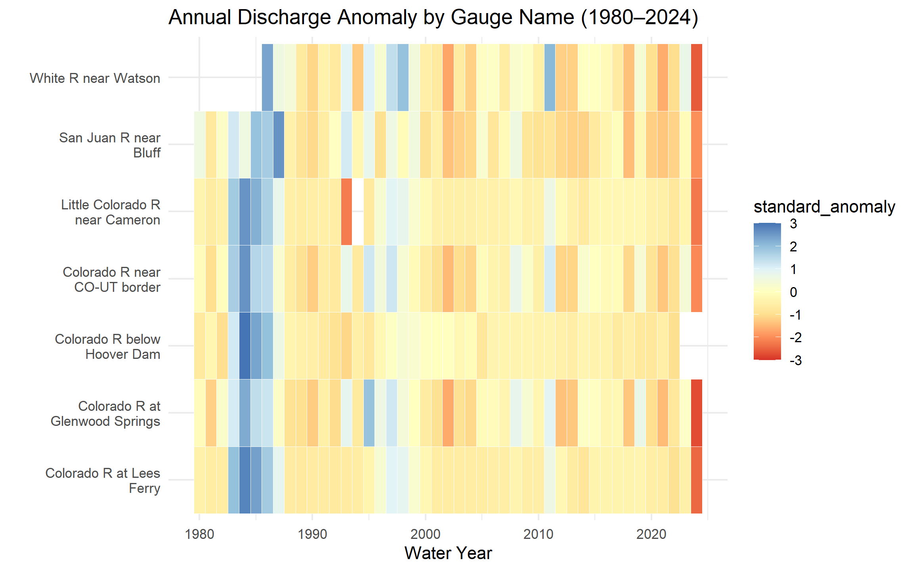
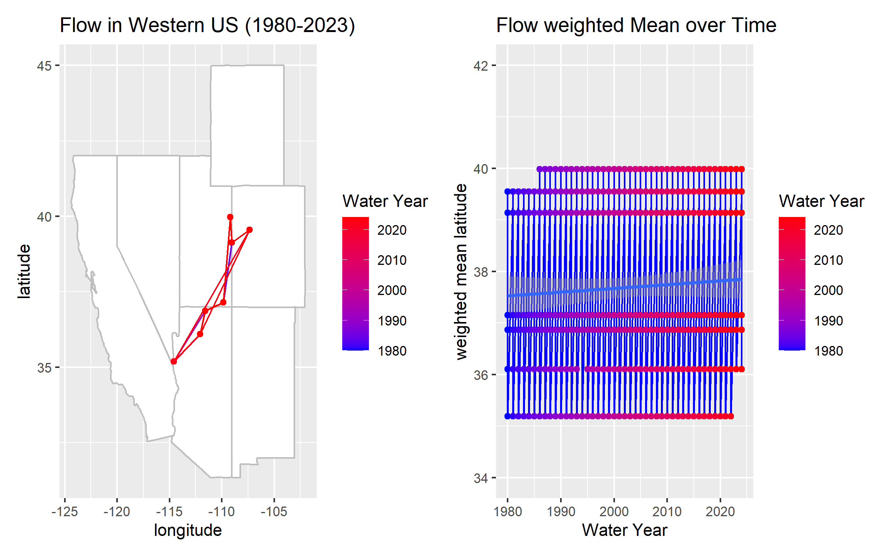
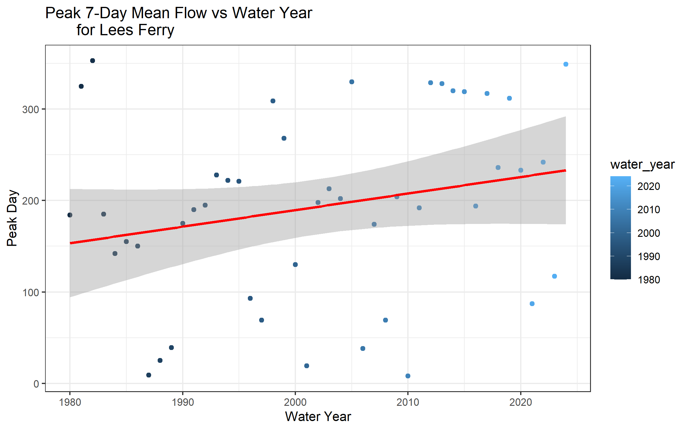
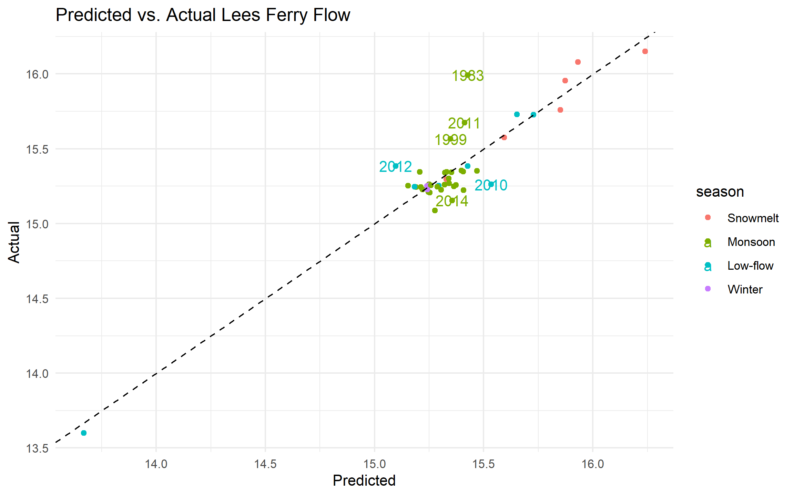
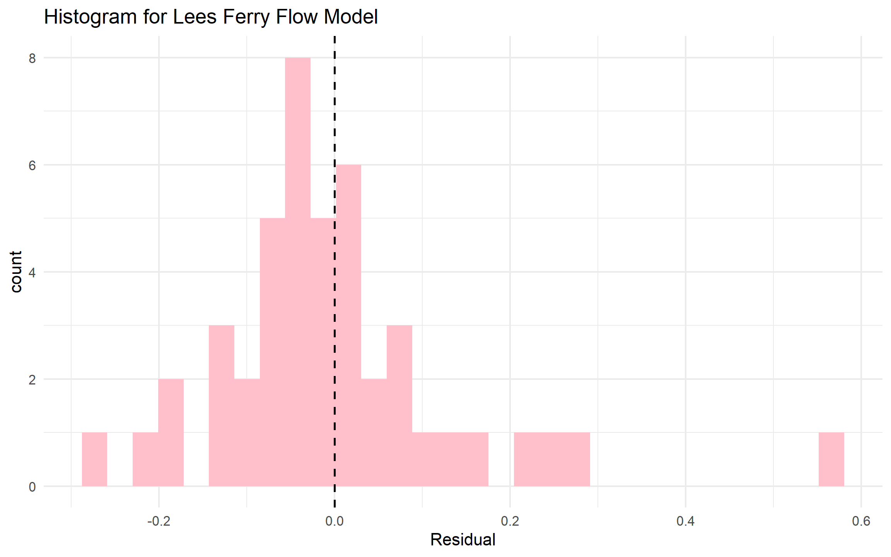

Code
pacman::p_load(
tidyverse,
dataRetrieval,
zoo,
patchwork,
flextable,
lubridate,
broom
)Exploring Streamflow Across the Colorado River Basin
Install and load the following packages. If any are missing, run install.packages("packagename") first:
pacman::p_load() installs any missing packages and loads them in one step — convenient for students setting up dependencies.
We will use the dataRetrieval package — developed and maintained by the USGS — to pull 44 years of daily mean discharge from 7 long-record gauges spanning the Colorado River’s main stem and major tributaries.
The USGS parameter code for discharge is 00060 (cubic feet per second). The statistic code 00003 is the daily mean value. Under the hood, dataRetrieval constructs and queries the same REST API URL we explored in lecture:
https://waterservices.usgs.gov/nwis/dv/?sites=09380000¶meterCd=00060&statCd=00003The data can be grabbed below!
gauges <- tribble(
~site_no, ~name, ~state,
"09380000", "Colorado R at Lees Ferry", "AZ",
"09163500", "Colorado R near CO-UT border", "CO",
"09085000", "Colorado R at Glenwood Springs","CO",
"09306500", "White R near Watson", "UT",
"09379500", "San Juan R near Bluff", "UT",
"09402500", "Little Colorado R near Cameron","AZ",
"09423000", "Colorado R below Hoover Dam", "NV"
)
raw <- readNWISdv(
siteNumbers = gauges$site_no,
parameterCd = "00060",
startDate = "1980-01-01",
endDate = "2023-12-31"
) |>
renameNWISColumns() |> # renames X_00060_00003 → Flow
left_join(gauges, by = "site_no") |>
select(site_no, name, state, Date, Flow)
glimpse(raw)Rows: 109,425
Columns: 5
$ site_no <chr> "09085000", "09085000", "09085000", "09085000", "09085000", "0…
$ name <chr> "Colorado R at Glenwood Springs", "Colorado R at Glenwood Spri…
$ state <chr> "CO", "CO", "CO", "CO", "CO", "CO", "CO", "CO", "CO", "CO", "C…
$ Date <date> 1980-01-01, 1980-01-02, 1980-01-03, 1980-01-04, 1980-01-05, 1…
$ Flow <dbl> 620, 605, 582, 582, 575, 590, 582, 582, 582, 590, 560, 598, 59…Note: this chunk is cached (cache = TRUE). If you change the data-pull arguments and need fresh data, set cache = FALSE temporarily or delete the _cache/ directory and re-render to force a new download.
glimpse() tell you?
Before doing anything with a new dataset, always check: Does the row count make sense? Are data types correct (Date should be <date>, Flow should be <dbl>)? Are there obvious NAs or impossible values? For ~7 gauges × 44 years × 365 days you should expect roughly 112,000 rows.
You are a water resources analyst. Each morning you deliver a reproducible snapshot of current conditions to Colorado River Compact stakeholders. The analysis must be re-runnable on any date with a single change — that requires building it around parameter objects rather than hardcoded values.
a. Create a my.date parameter object set to the last day of water year 2023 (September 30, 2023). Ensure it is stored as a proper Date object, not a character string.
as.Date() converts a character string to a Date. R stores dates internally as days since 1970-01-01, enabling date arithmetic (my.date - 7 = one week earlier) and use in filter() comparisons. Hint: use as.Date() to convert strings to Date objects and confirm with class() before using date arithmetic or filter().
b. Compute the day-over-day change in discharge for each gauge — how much flow rose or fell compared to the previous day. Store this as a new column called flow_delta. This tells you whether conditions are improving or deteriorating, which is often more actionable than the raw level alone.
c. Filter to my.date and produce two formatted tables using flextable:
Both tables should have clear column names, rounded numbers, and descriptive captions using flextable (see tip).
flextable
flextable creates publication-quality HTML tables directly from data frames.
Hint: use flextable() with set_header_labels(), set_caption(), and autofit() for clean tables. Use slice_max() to select top n rows and round() to tidy numeric columns before rendering.
# can not see the captions
mydate_data<-gauge_data|>
filter(Date == my.date)
mydate_data|>
slice_max(Flow, n=5)|>
mutate(Flow = round(Flow)) |>
flextable()|>
set_header_labels(site_no = "Site ID",
name = "Gauge Name",
state= "State",
Flow = "Discharge",
flow_delta= "Flow Delta")|>
set_caption("Table 1. Top 5 Gauges with the highest discharge on the last day of water year 2023")|>
autofit()Site ID | Gauge Name | State | Date | Discharge | Flow Delta |
|---|---|---|---|---|---|
09402500 | Little Colorado R near Cameron | AZ | 2023-09-30 | 6,950 | -20 |
09380000 | Colorado R at Lees Ferry | AZ | 2023-09-30 | 6,570 | -10 |
09163500 | Colorado R near CO-UT border | CO | 2023-09-30 | 3,470 | -50 |
09379500 | San Juan R near Bluff | UT | 2023-09-30 | 680 | -143 |
09085000 | Colorado R at Glenwood Springs | CO | 2023-09-30 | 533 | 8 |
mydate_data|>
drop_na(flow_delta)|>
slice_max(flow_delta, n=5)|>
mutate(flow_delta = round(flow_delta))|>
flextable()|>
set_header_labels(site_no = "Site ID",
name = "Gauge Name",
state= "State",
Flow = "Discharge",
flow_delta= "Flow Delta")|>
set_caption("Table 2. Top 5 Gauges with the highest day-over-day increase on the last day of water year 2023")|>
autofit()Site ID | Gauge Name | State | Date | Discharge | Flow Delta |
|---|---|---|---|---|---|
09085000 | Colorado R at Glenwood Springs | CO | 2023-09-30 | 533 | 8 |
09306500 | White R near Watson | UT | 2023-09-30 | 329 | -7 |
09380000 | Colorado R at Lees Ferry | AZ | 2023-09-30 | 6,570 | -10 |
09402500 | Little Colorado R near Cameron | AZ | 2023-09-30 | 6,950 | -20 |
09163500 | Colorado R near CO-UT border | CO | 2023-09-30 | 3,470 | -50 |
Raw discharge numbers alone don’t tell the full story. Lees Ferry always carries more water than the San Juan at Bluff — but that is largely because it drains over 111,000 square miles versus the San Juan’s ~23,000. To compare these sites meaningfully, we need each gauge’s drainage area. That information lives in a separate table and must be joined in.
This is the core relational data problem: observations in one table, attributes in another, connected through a shared key. It is also one of the most error-prone operations in data science — not because the syntax is hard, but because bad joins fail silently.
Before writing a single _join() call, answer three questions:
| Function | Keeps rows from… | Non-matching rows |
|---|---|---|
left_join(x, y) |
All of x |
y columns filled with NA |
right_join(x, y) |
All of y |
x columns filled with NA |
inner_join(x, y) |
Only rows matching in both | Dropped entirely |
full_join(x, y) |
Both x and y |
NAs on whichever side has no match |
The most common mistake: using inner_join when you meant left_join. An inner join silently drops every row from x that has no match in y — your dataset shrinks and you may not notice until downstream results are wrong.
The second most common mistake: joining on a key that is not unique in one of the tables. If site_no appears twice in site_meta, every matching row in your flow data will be duplicated — your dataset grows and you may not notice.
Both failures are invisible without explicit verification. For graduate-level work, in your write-up briefly justify the join type you chose, quantify any unmatched keys or duplicates you observed, and discuss possible data provenance reasons for mismatches.
a. Pull site metadata for all 7 gauges. Before joining, verify that site_no is actually unique in site_meta — a duplicated key will silently inflate your row count.
site_meta <- readNWISsite(gauges$site_no) |>
select(
site_no,
drain_area_va, # drainage area in square miles
huc_cd, # 8-digit HUC watershed code
dec_lat_va, # latitude
dec_long_va # longitude
)
# Is site_no actually unique? If any row shows n > 1, the join will duplicate rows
site_meta |> count(site_no) |> filter(n > 1)[1] site_no n
<0 rows> (or 0-length row.names)A primary key uniquely identifies each row in its own table. site_no in site_meta is a primary key — exactly one row per gauge.
A foreign key appears in another table to link observations back. site_no in your flow data is a foreign key — it appears thousands of times (once per day per gauge) and connects each observation to its gauge’s metadata.
The join matches on this shared key. Because one gauge has many flow records, this is a one-to-many relationship — one site_meta row fans out to match thousands of flow rows.
b. Join site_meta to your flow data using site_no as the key. Use the join type that keeps all flow records regardless of whether metadata is available.
[1] TRUE[1] 0 site_no drain_area_va huc_cd dec_lat_va dec_long_va name
1 09379500 23000 14080205 37.15068 -109.8667 San Juan R near Bluff
state Date Flow flow_delta
1 UT 2023-09-30 680 -143c. Verify the join — this step is not optional:
nrow(result) == nrow(left_table) — row count unchanged ✓sum(is.na(new_column)) == 0 — no unexpected NAs ✓These checks cost 30 seconds and catch errors that would otherwise corrupt every downstream calculation silently. You will join data in every lab this semester. Consider, building this habit now.
This course is at the graduate level. In addition to producing correct code and outputs, your submission should:
Lees Ferry’s high discharge reflects its enormous watershed, not necessarily more intense rainfall or runoff. To compare runoff intensity across sites with different drainage areas, we normalize by expressing flow per unit area: cfs per square mile.
a. Add a flow_per_sqmi column to your data.frame.
b. On my.date, build a flextable showing both raw and normalized rankings side by side for all 7 gauges. Include columns for gauge name, raw discharge (cfs), drainage area (mi²), normalized flow (cfs/mi²), raw rank, and normalized rank. Sort by raw rank.
site_meta_flow|>
mutate(raw_rank= rank(-Flow),
norm_rank = rank(-flow_per_sqmi))|>
arrange(raw_rank)|>
flextable()|>
set_header_labels(
name = "Gauge Name",
site_no = "Site Number",
Flow = "Raw Discharge (cfs)",
drain_area_va = "Drainage Area (mi²)",
flow_per_sqmi= "Normalized Flow (cfs/mi²)",
flow_delta= "Flow Delta",
dec_lat_va= "latitude",
dec_long_va= "longitude",
raw_rank = "Raw Rank",
state= "State",
norm_rank = "Normalized Rank")|>
set_caption("Discharge rankings for all 7 gauges on the last day of water year 2023")|>
autofit()Site Number | Drainage Area (mi²) | huc_cd | latitude | longitude | Gauge Name | State | Date | Raw Discharge (cfs) | Flow Delta | Normalized Flow (cfs/mi²) | Raw Rank | Normalized Rank |
|---|---|---|---|---|---|---|---|---|---|---|---|---|
09402500 | 141,600 | 15010001 | 36.10137 | -112.0863 | Little Colorado R near Cameron | AZ | 2023-09-30 | 6,950 | -20 | 0.04908192 | 1 | 5 |
09380000 | 111,800 | 140700061105 | 36.86433 | -111.5879 | Colorado R at Lees Ferry | AZ | 2023-09-30 | 6,570 | -10 | 0.05876565 | 2 | 4 |
09163500 | 17,849 | 140100051906 | 39.13274 | -109.0271 | Colorado R near CO-UT border | CO | 2023-09-30 | 3,470 | -50 | 0.19440865 | 3 | 2 |
09379500 | 23,000 | 14080205 | 37.15068 | -109.8667 | San Juan R near Bluff | UT | 2023-09-30 | 680 | -143 | 0.02956522 | 4 | 6 |
09085000 | 1,453 | 140100041003 | 39.54667 | -107.3308 | Colorado R at Glenwood Springs | CO | 2023-09-30 | 533 | 8 | 0.36682725 | 5 | 1 |
09306500 | 4,020 | 14050007 | 39.97886 | -109.1787 | White R near Watson | UT | 2023-09-30 | 329 | -7 | 0.08184080 | 6 | 3 |
09423000 | 173,300 | 150301010302 | 35.19167 | -114.5714 | Colorado R below Hoover Dam | NV | 2023-09-30 | 7 | 7 |
c. Answer in 2–3 sentences: (1) do the raw and normalized rankings differ, and if so, which gauge changes most dramatically? (2) Why does per-area normalization matter for comparing gauges in the Colorado Basin? (3) Name one analysis where you would use raw discharge and one where you would use normalized discharge.
Yes the raw and normalized rankings are different. 09402500 and 09085000 differ significantly. Per area normalization is important for comparing the flow ranking because raw comparison that does not include area could give out wrong information about the flow comparison in each gauge. If we are comparing the flow data we should always use the normalized discharge to accurately represent the data. If we are investigating something related to only one gauge, like the discharge rate in one gauge for an environmental project, we should look at the raw discharge.
Drought managers don’t just watch absolute flow levels — they watch how current conditions compare to historical norms. The standard operational metric is the 7Q10: the lowest 7-day average flow expected to occur once in 10 years. We’ll use a related approach: flag when the 7-day rolling mean falls below the historical 10th percentile.
The USGS computes official low-flow statistics — including the 7Q10 — and makes them accessible via dataRetrieval::readNWISstat(). The thresholds you compute here will closely approximate those official values and follow the same logic water rights lawyers and regulators actually use.
a. For each gauge, compute the 7-day rolling mean of daily discharge. Use zoo::rollmean() with fill = NA and align = "right" so each value represents the average of the current and 6 preceding days. If you havent see this function before, check out the documentation (?rollmean) and examples to understand how it works.
b. Define a low-flow threshold for each gauge as the 10th percentile of its historical discharge during 1980–2010. A flow that is critically low for Lees Ferry might be above average for the Little Colorado — thresholds must be site-specific.
c. Add a logical column below_threshold that is TRUE when the 7-day rolling mean is below the gauge’s 10th percentile threshold.
d. For Lees Ferry (site 09380000) — the Compact’s primary accounting point — plot the 7-day rolling mean from 2000–2023 using ggplot. Shade periods below threshold in red and add a dashed horizontal reference line at the threshold.
leesferry<- rolling_mean|>
filter(site_no== "09380000")|>
drop_na(roll7day)|>
filter(year(Date) >= 2000, year(Date) <= 2023)|>
mutate(below_threshold_lees = roll7day < threshold)
lees_threshold <- lowflow |>
filter(site_no == "09380000") |>
pull(threshold)
ggplot(leesferry, aes(Date, roll7day))+
geom_ribbon(data=leesferry |> filter(below_threshold_lees),
aes(ymin = 0, ymax = lees_threshold), fill= "indianred1")+
geom_line(color= "cadetblue")+
geom_hline(yintercept = lees_threshold, color= "darkblue", linetype= "dashed", linewidth= 0.8)+
theme_bw()+
scale_y_continuous(limits = c(0, NA))+
labs(title= "7-Day Rolling Mean Discharge (2000–2023) at Lees Ferry",
subtitle = paste0("Red shading = days below 10th percentile threshold "),
x = "Date",
y = "7-Day Rolling Mean (cfs)")
e. How many days per year, on average, did Lees Ferry fall below its low-flow threshold in 2000–2010 vs. 2011–2023? Produce a small summary table and answer in 2–3 sentences: (1) did below-threshold days increase or decrease? (2) Is this a shift in isolated dry years or a persistent baseline change? (3) What does this imply for Compact delivery obligations?
On average below threshold days have increased from 2000-2010 to 2011-2023. It seems like this shows a persistent baseline change. This implies that for meeting the compact requirements for water delivery we need to apply measures that conserves more water, or an amandement that considers future droughts due to climate change.
n_distinct(year(Date)) counts unique years in a group — useful for computing per-year averages across a multi-year period.
leesferry_below<-leesferry|>
mutate(periods= if_else(year(Date)<= 2010, "2000–2010", "2011–2023"))|>
mutate(threshold_limit= if_else(roll7day< threshold, "below", "above"))|>
group_by(periods)|>
summarise(total_below= sum(below_threshold_lees, na.rm = TRUE),
Years= n_distinct(year(Date)),
mean_days= total_below/ Years)
leesferry_below|>
flextable()|>
set_header_labels(total_below= "Total days Below Threshold",
mean_days= "Average Days per Year Below Threshold")|>
set_caption("Average Days per Year Below Threshold in Lees Ferry")|>
autofit()periods | Total days Below Threshold | Years | Average Days per Year Below Threshold |
|---|---|---|---|
2000–2010 | 399 | 11 | 36.27273 |
2011–2023 | 358 | 13 | 27.53846 |
Calendar years are a poor fit for western US hydrology. The water year (October 1 – September 30) captures the full snowmelt cycle: snowpack accumulates through winter, melts in spring, and by September the basin has recharged or drawn down for the year. Water year 2023 = October 1, 2022 through September 30, 2023.
a. Add water_year and month columns to your dataset. The water year is the calendar year of the ending September 30 — months October through December belong to the next water year.
Use if_else() to set water_year for Oct–Dec months.
b. For each gauge and water year, compute: total annual discharge, peak daily discharge, and number of days below the low-flow threshold.
rolling_mean<- rolling_mean|>
mutate(Month= month(Date),
water_year= if_else (month(Date)>= 10, year(Date)+1, year(Date) ))
annual_data<- rolling_mean|>
drop_na(Flow, below_threshold)|>
group_by(site_no, water_year)|>
summarise(annual_discharge= sum(Flow),
peak_daily= max(Flow),
days_below_thrshold= sum(below_threshold))|>
arrange(desc(water_year))c. Plot total annual discharge at Lees Ferry by water year (1980–2023) as a bar chart. Color bars above the long-term median blue and bars below it red. Add a dashed horizontal reference line at the median.
Hint: compute the long-term median and color bars by whether each year’s total is above or below it; add a dashed horizontal line at the median for reference.
annual_data_lees<- annual_data|>
filter(site_no== "09380000" & water_year >= 1980, water_year <= 2023)
lees_median<- median(annual_data_lees$annual_discharge)
annual_data_lees<- annual_data_lees|>
mutate(median = if_else( annual_discharge >= lees_median, "Above Median", "Below Median"))
annual_data_lees|>
ggplot(aes(water_year, annual_discharge, fill = median))+
geom_bar(stat= "identity")+
geom_hline(yintercept = lees_median, color= "darkgreen", linewidth= 1, linetype= "dashed")+
labs(title= "Total Annual Discharge (1980-2023) at Lees Ferry",
x= "Water Year",
y= "Total Annual Discharge")+
scale_fill_manual(values = c("Above Median"= "lightblue", "Below Median"= "red"))+
theme_bw()
In 2–3 sentences: (1) describe the direction and approximate timing of any structural shift in the record, (2) identify one year that stands out as an exception to the dominant pattern and what you know about its cause, and (3) explain what this pattern means for Compact water accounting.
The plot shows that there is a structural shift to below median discharge around 1983 to 1998, and 1995 to 2000s. It seems that after 2005, we have less high median discharge years comapared to the pattern from previous years. It seems like the years that we have below median discharge in Lees Ferry is decreasing. Although we can not jusdge based on one of the tributaries but if the same pattern exists in other tributaries, this could mean less available water for the Colorado river compact, and could lead to disputes between states. > …
A single gauge tells you about one location. To understand whether drought is consistent across the entire basin — or whether some tributaries are diverging from the main stem — you need to compare all gauges simultaneously on the same scale.
Raw discharge can’t serve this purpose: a large-watershed gauge will always dominate. The solution is a standardized anomaly — each year’s flow expressed as standard deviations above or below the site’s own baseline mean:
\[\text{anomaly} = \frac{\bar{Q}_{year} - \bar{Q}_{baseline}}{\sigma_{baseline}}\]
where baseline = 1980–2010. An anomaly of –2 means “two standard deviations below normal for this gauge” — directly comparable to the same metric at any other gauge.
a. Compute the 1980–2010 baseline mean and SD per gauge. Join those stats back to the full annual data and compute the standardized anomaly for every gauge-year combination.
Hint: summarize baseline mean and SD per gauge (1980–2010), join those stats to the annual table, and compute the standardized anomaly as (total_flow − baseline_mean)/baseline_sd. This is a join you’ve seen twice now — verify row counts and NAs after the join.
baseline_data<- annual_data|>
filter(water_year>= 1980, water_year<= 2010)|>
drop_na(annual_discharge)|>
group_by(site_no)|>
summarise(baseline_mean= mean(annual_discharge), baseline_sd= sd(annual_discharge))
baseline_data<- baseline_data|>
left_join(gauges, by= "site_no")
gauge_anomaly<- annual_data|>
left_join(baseline_data, by= "site_no")|>
mutate(standard_anomaly= (annual_discharge- baseline_mean)/ baseline_sd)
nrow(gauge_anomaly) == nrow(annual_data)[1] TRUE[1] 0b. Visualize as a heatmap: water year on x, gauge name on y, fill = standardized anomaly. Use a diverging color scale centered at zero (blue = above average, red = below average).
geom_tile() draws one rectangle per gauge-year. For the color scale, use a diverging color scale centered at zero (e.g., RdBu), clamp extreme values with oob = scales::squish, and wrap long gauge names to keep labels readable.
gauge_anomaly|>
mutate(name= str_wrap(name, width= 20))|>
ggplot(aes(water_year, name, fill= standard_anomaly))+
geom_tile(color= "white")+
scale_fill_distiller(palette= "RdYlBu",limits = c(-3, 3), oob = scales::squish, direction= 1) +
labs(title = "Annual Discharge Anomaly by Gauge Name (1980–2024)",
x = "Water Year",
y = "") +
theme_minimal()
c. In 3–4 sentences: (1) describe whether the post-2000 drought signal appears across all gauges or only some, (2) identify two specific years that appear as basin-wide anomalies — one dry, one wet — and name the climate event that caused each, and (3) explain what simultaneous basin-wide anomalies tell you that a single-gauge record cannot.
The post-2000 drought signal appears across almost all gauges. This shows that there are more drought after 2000s. It seems that 2002 was very dey, and 2011 was weter compared to the trend. The heat map compares all seven gauges across different years and tells us what is happening in the basin overall, and we can see the trend and the relationship. If the heatmap was showing drought only in one of the gauges and others were wet, we would realize that maybe something else is happening in that tributary that is external rather than climate and drought.
You have been asked to understand how the geographic center of streamflow has shifted over time. If drought has disproportionately reduced flow in the southern tributaries, the flow-weighted center of the basin should drift north — proportionally more flow is coming from northern headwater gauges. In exceptional snowmelt years it should shift back.
We measure this with the flow-weighted mean position: each gauge’s coordinates are weighted by its fraction of total annual basin flow.
\[\bar{X}_{year} = \frac{\sum (lon_i \times Q_i)}{\sum Q_i} \qquad \bar{Y}_{year} = \frac{\sum (lat_i \times Q_i)}{\sum Q_i}\]
a. Join gauge coordinates (dec_lat_va, dec_long_va) from site_meta to your annual summary. Compute the flow-weighted mean latitude and longitude for each water year.
Hint: join coordinates from site_meta to the annual table, then compute weighted longitude/latitude per year as sum(coord * total_flow) / sum(total_flow). This is your third join — verify row counts, NAs, and spot-check known values.
Note: mapping can use map_data("state"); if map_data() is not available install the maps package (install.packages("maps")) or use ggplot2::map_data("state") which provides equivalent polygons.
[1] TRUE[1] 0b. Create a two-panel figure using patchwork:
Hint: draw a western-US polygon basemap and overlay the annual weighted centers as a colored path and points; beside it, plot weighted latitude over time with a linear trend. Use a diverging color gradient for year progression and patchwork to combine panels.
If you haven’t seen patchwork before, it allows you to combine multiple ggplots into a single figure with simple syntax: plot1 + plot2 places them side by side; plot1 / plot2 stacks them vertically assuming the package is loaded.
western_states<- map_data("state")|>
filter(region %in% c("california", "new mexico", "wyoming","colorado", "utah", "arizona", "nevada"))
plot1<- ggplot() +
geom_polygon(western_states, mapping= aes(long,lat, group = group), fill= "white", color= "grey") +
geom_path(flow_weighted, mapping= aes(weighted_long,weighted_lat, color = water_year))+
geom_point(flow_weighted, mapping= aes(weighted_long, weighted_lat, colour = water_year))+
scale_color_gradient(low= "blue", high = "red", name= "Water Year")+
labs(title = "Flow in Western US (1980-2023)",
x= "longitude",
y= "latitude")
plot2<- ggplot(flow_weighted, mapping= aes(water_year, weighted_lat))+
geom_line(color= "blue")+
geom_smooth(method= "lm")+
geom_point(aes(color=water_year))+
scale_color_gradient(low= "blue", high = "red", name= "Water Year")+
scale_y_continuous(limits = c(34,42))+
labs(title = "Flow weighted Mean over Time",
x= "Water Year",
y= "weighted mean latitude")
plot1+plot2
c. Your latitude time series should show two years where the weighted center spikes dramatically northward. Identify those two years and explain: (1) what climate event caused each spike, (2) what they have in common physically, and (3) what the long-term upward trend in weighted latitude suggests about which part of the basin is becoming proportionally more important to total flow — and why that matters for water managers downstream.
The spikes happen in 2011 and 2017. It seams like there has been more flow on those years, which could be a sign of la nina year. They both happen in high elevation. The long-term upward trend in weighted latitude suggests that northern gauges are becoming more important for the flow of the whole basin.
Annual totals mask important seasonal structure. The Colorado Basin has two distinct runoff pulses: a snowmelt surge in spring (April–June) driven by Rocky Mountain headwater snowpack, and a monsoon pulse in late summer (July–September) driven by convective storms across the Arizona-New Mexico plateau. These seasons respond differently to climate forcing — and under warming, the snowmelt season is arriving earlier.
a. Add a season column using case_when(). Roughly we will define the seasons as follows:
Make season a factor with levels in hydrological order: Snowmelt, Monsoon, Low-flow, Winter.
Hint: extract month from Date with lubridate::month(), create season with case_when() mapping month ranges to labels, then convert to a factor with explicit level ordering:
b. Group by gauge, water year, and season. Summarize total seasonal discharge and normalized runoff per group.
c. For each gauge and water year, identify the date of peak 7-day mean flow and convert it to day-of-year. Plot peak day-of-year vs. water year for Lees Ferry with a linear trend line.
slice_max(roll7, n = 1, with_ties = FALSE) inside a group_by(site_no, water_year) block selects the single highest 7-day mean row per gauge per year. Then lubridate::yday(Date) converts to day-of-year (1–365).
peak_day_flow<- rolling_mean|>
drop_na(Flow, roll7day)|>
group_by(site_no, water_year)|>
slice_max(roll7day, n = 1, with_ties = FALSE)|>
ungroup()|>
mutate(peak_day= lubridate::yday(Date))
peak_day_flow|>
filter(site_no == "09380000")|>
ggplot(aes(water_year, peak_day))+
geom_point(aes(color = water_year))+
geom_smooth(method = "lm", se = TRUE, color= "red")+
labs(title = "Peak 7-Day Mean Flow vs Water Year
for Lees Ferry",
x= "Water Year",
y= "Peak Day")+
theme_bw()
d. In 2–3 sentences: (1) describe the direction and magnitude of the peak timing trend, (2) is it statistically visible or buried in noise? (3) What would a two-week earlier peak timing mean operationally for reservoir managers trying to capture spring runoff before it passes downstream?
The trend shows that the peak timing is happening earlier than before, and the overall trend is increasing. The trend line shows it specifically, but I think the trend is clear statistically, however a test would help us see it clearer. It means they have a short time between snowmelt and peak flow and they have less time to capture the runoff before it passes downstream.
Lees Ferry is the Compact’s accounting point — the location where upper basin states must deliver flow to lower basin states. Predicting annual discharge at Lees Ferry from upstream conditions has direct operational value: managers can begin planning deliveries months before the water arrives.
We’ll build a simple but physically grounded model: can Glenwood Springs (an upper Rocky Mountain gauge) predict Lees Ferry annual flow, and, does that relationship change by season?
a. Build your model dataset through four sequential operations:
annual to Lees Ferry; rename total_flow to lees_flow09085000); rename to glenwood_flowThe dominant season: within each water year, which season (Snowmelt, Monsoon, Low-flow, Winter) carried the most flow at Lees Ferry? Filter seasonal summaries to Lees Ferry, then group_by(water_year) |> slice_max(total_flow, n = 1) to select one season per year.
Then join that back to your Lees Ferry & Glenwood annual table by water_year.
This is your fourth join. Always verify: the final dataset should have ~44 rows (one per water year, 1980–2023), zero NAs in flow columns, and log-transformed values should be positive.
#1
lees_annual <- annual_data|>
filter(site_no == "09380000")|>
rename(lees_flow = annual_discharge)
# I already filtered this above it is called annual_data_lees but in here it is not asking us to filter to up to 2023 so i can not use the same dataset
#2
glenwood_annual<- annual_data|>
filter(site_no == "09085000")|>
rename(glenwood_flow = annual_discharge)
lees_model_data<- lees_annual|>
left_join(glenwood_annual, by = "water_year")
#3
dominant_season<- seasonal_flow|>
filter(site_no == "09380000")|>
group_by(water_year)|>
slice_max(total_season_discharge, n = 1)|>
ungroup()|>
select(water_year, season)
lees_model_data<- lees_model_data|>
left_join(dominant_season, by = "water_year")
#4
lees_model_data<- lees_model_data|>
mutate(log_lees= log(lees_flow),
log_glenwood =log(glenwood_flow))
nrow(lees_model_data)[1] 45[1] 0[1] 0[1] 0b. Fit a linear model predicting log_lees from log_glenwood, season, and their interaction, If you haven’t seen linear modeling in R, we will cover it in more detail latter in this course, but, the syntax is straightforward: lm(response ~ predictor1 * predictor2, data = mydata) fits a model with main effects and an interaction term. The interaction (*) allows the relationship between Glenwood and Lees to differ by season while a model without interaction (lm(log_lees ~ log_glenwood + season)) would assume the same Glenwood-Lees relationship in every season.
Call:
lm(formula = log_lees ~ log_glenwood * season, data = lees_model_data)
Residuals:
Min 1Q Median 3Q Max
-0.27318 -0.06674 -0.01845 0.03116 0.56633
Coefficients:
Estimate Std. Error t value Pr(>|t|)
(Intercept) -8.1111 5.2755 -1.538 0.132679
log_glenwood 1.7973 0.3965 4.533 5.9e-05 ***
seasonMonsoon 20.1902 5.4095 3.732 0.000636 ***
seasonLow-flow 12.1775 5.3668 2.269 0.029188 *
seasonWinter 23.0070 8.4608 2.719 0.009904 **
log_glenwood:seasonMonsoon -1.5459 0.4072 -3.796 0.000529 ***
log_glenwood:seasonLow-flow -0.9088 0.4042 -2.249 0.030584 *
log_glenwood:seasonWinter -1.7699 0.6535 -2.708 0.010181 *
---
Signif. codes: 0 '***' 0.001 '**' 0.01 '*' 0.05 '.' 0.1 ' ' 1
Residual standard error: 0.1535 on 37 degrees of freedom
Multiple R-squared: 0.8553, Adjusted R-squared: 0.8279
F-statistic: 31.25 on 7 and 37 DF, p-value: 1.127e-13c. In 3–4 sentences: (1) report the R² and state whether the overall model is statistically significant, (2) interpret the log_glenwood coefficient as an elasticity — what does it mean physically that the coefficient is greater than 1? (3) describe what the significant negative interaction terms tell you about the upstream-downstream relationship outside of Snowmelt season.
In a log-log model, the coefficient on log_glenwood is an elasticity: a coefficient of 1.8 means a 1% increase in Glenwood Springs flow is associated with a 1.8% increase at Lees Ferry. This super-linear amplification makes physical sense — flow accumulates from tributaries between the two gauges, so an above-average headwater year compounds as it moves downstream.
R^2= 0.855, adjusted R^2= 0.828. This means that the model explains 85.5 of the variance in annual flow in Lees Ferry. The log_glenwood coef equals to 1.797 and it means that 1% increase in flow in Glenwood is associated with 1.797% increase at Lees Ferry. The significant negative interaction terms for Monsoon (−1.55), Low-flow (−0.91), and Winter (−1.77) show that the upstream downstream relationship is not the same during the Monsoon and winter seasons. and Lees ferry and Glenwood are independent from each other
A model that fits well on average can still fail in predictable ways. Two core assumptions of linear regression are: predictions should be unbiased across the full range of fitted values, and residuals should be approximately normally distributed. Let’s check both — and look for the outlier year that the model cannot predict.
a. Use broom::augment() to produce a tidy data frame of predictions and residuals alongside the original data:
broom
broom converts messy R model objects into tidy, pipeable data frames:
augment(mod) — adds .fitted (predictions) and .resid (residuals) to your dataglance(mod) — one-row summary of model fit: R², AIC, p-valuetidy(mod) — one-row-per-coefficient table with estimates and p-valuesTogether these make model results as pipeable as any other data frame — straight into ggplot or flextable.
b. Create a predicted vs. actual scatter plot. Add a dashed 1:1 reference line (perfect prediction). Color points by season. Identify any point that sits noticeably off the line.
geom_abline(slope = 1, intercept = 0, linetype = "dashed") draws the 1:1 line. Points above it = underpredicted (actual > predicted); points below = overpredicted.
aug|>
ggplot(aes(x = .fitted, log_lees, colour= season))+
geom_point()+
geom_abline(slope = 1, intercept = 0,
linetype = "dashed")+
geom_text(data= aug |> filter(abs(.resid) > 0.2),
aes(label = water_year)) +
labs(title = "Predicted vs. Actual Lees Ferry Flow",
x = "Predicted",
y= "Actual")+
theme_minimal()
c. Plot a histogram of the residuals with a vertical dashed line at zero.

d. In 3–4 sentences: (1) identify the outlier water year visible in your scatter plot. Which year is it and why did the model fail to predict it? (2) Do the residuals appear approximately normal, or is there a tail that concerns you? (3) Name two additional predictors that would most improve this model and explain the physical mechanism behind each.
There are several outliers including the year 1983, 2011, 2012. The model fail to predict it because the difference in the flow capture that year. The residuals appear normal with outlier on th right tail. I think two predictors could be snowpack, that helps measure the water from melting, and climate drivers such as el nino la nina as they can cause above average measures for different years.
The model in Q9 predicts Lees Ferry from a single upstream gauge. dataRetrieval gives you access to hundreds more across the basin. Could a multi-gauge ensemble prediction outperform the single-gauge model? Could peak flows in March predict the following June’s flow at Lees Ferry months before snowmelt begins?
These are real operational forecasting questions that USBR and state water agencies work on every year. The data is already in your hands to try!
In this lab you built a complete analytical pipeline for one of the most consequential river systems in North America:
dataRetrievalEvery tool — dplyr, ggplot2, zoo, patchwork, broom, flextable — recurs in work you will inevitabbly do. The key is that the workflow is always the same: get → tidy → explore → model → communicate.
| Question | Topic | Points |
|---|---|---|
| Q1 | Daily conditions report | 10 |
| Q2 | Basin metadata join | 10 |
| Q3 | Per-unit-area normalization | 10 |
| Q4 | Low-flow threshold monitoring | 20 |
| Q5 | Annual water year summary | 10 |
| Q6 | Basin-wide trend analysis | 15 |
| Q7 | Moving center of drought | 15 |
| Q8 | Seasonal regimes + peak timing | 15 |
| Q9 | Predictive model | 15 |
| Q10 | Model evaluation | 10 |
| Well-structured, legible Qmd | — | 10 |
| Deployed as a webpage | — | 10 |
| Total | 150 |
Grading key (brief): - Correctness (primary): calculations, joins, and checks — e.g., Q2 join verification and Q4 rolling mean logic. - Reproducibility: code runs end-to-end, used parameter objects (my.date), and included any small checks or assertions. - Clarity & Presentation: readable code, labeled tables/plots, captions for flextable outputs, and a clear 1-paragraph interpretation.
quarto render lab-01.qmdgit add -A && git commit -m "lab 1 complete" && git pushhttps://USERNAME.github.io/csu-523c/lab-01.htmlAdd this project to your personal website with a brief description — it counts toward end-of-semester extra credit.